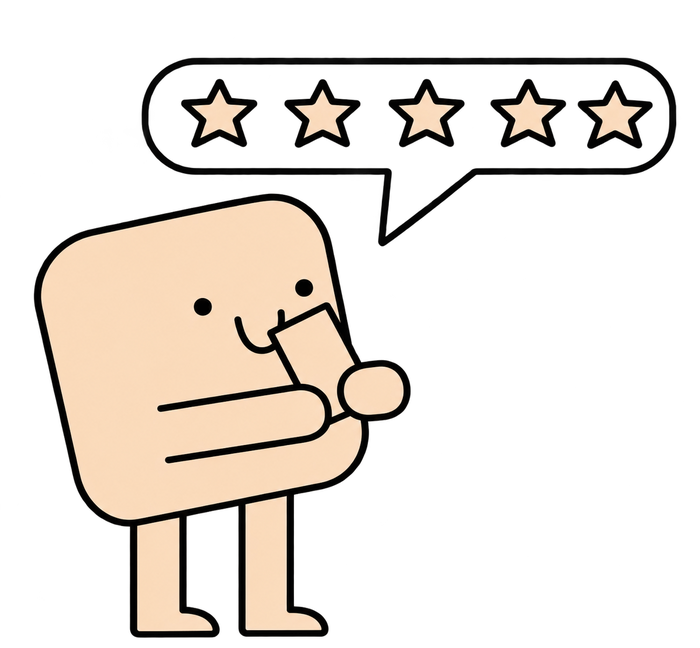

Listo · Ya estás listo · Civic tech · Passion project
Clarity and confidence for families facing ICE.
An emergency preparedness app that helps undocumented families plan for the worst and connect to resources they can trust.


“It exceeded my expectations. I want it to be real.” Test participant, final prototype
14% → 86%
preparedness score with Listo*
5.5/7
trust in Listo with real family information
5/6 participants
found free legal help, no guidance needed